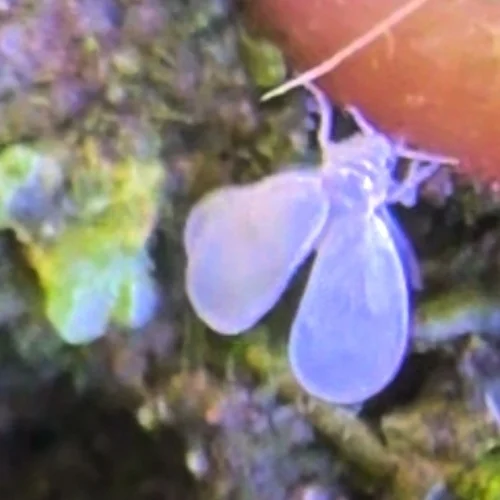

一翻叶就飞起一群白色小虫
温室粉虱在发育的大部分时间里附着于叶背。一碰叶就飞起的成虫能指出检查位置；继续比较新叶和老叶，才能发现成虫飞散后仍留在原处的若虫。

先看哪里
轻碰一片叶，观察白色小虫飞起后停在哪里。再挑同株较老的叶片，用放大镜查看背面。检查黄板后要回到周围植株查看。黄板无法指出哪片叶已有繁殖群体，在叶背找到附着的若虫才可定位。
确认线索
寻找贴在叶背、扁平的椭圆形若虫。同株既有成虫又有若虫，比偶见一只飞虫更能说明已在繁殖。
相似症状
蕈蚊多从盆土表面飞起，体色较深。粉虱也可能引起叶面发黏或煤污，但其他刺吸害虫同样会留下这些痕迹。
处理方法
温室或室内可先隔离受害株，检查相邻植株。黄板有助于监测成虫，若虫仍需到叶背寻找。
如何复查
复查同一组植株时，翻看不同叶龄的数片叶，分别记录活若虫和冠层附近捕获的成虫。
即使碰叶很少飞出成虫，也要查一片原有若虫的下层叶，再看其上方叶背。诱捕后飞虫变少是好迹象，但若上层出现新的若虫群，这株仍须继续处理和复查。